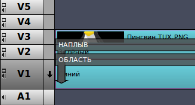
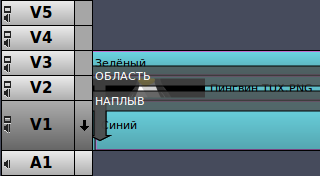
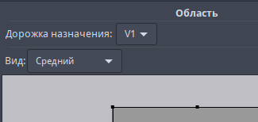

Видеоредактор Flowblade использует композиторы для объединения клипов на двух разных дорожках.
Режимы композитинга
Способ работы с композиторами определяется режимом композитинга. Пользователи могут выбрать режим композитинга в соответствии со своими предпочтениями или потребностями редактирования определённой последовательности.
Чтобы установить Режим композитинга для последовательности, выберите его в меню Последовательность -> Режим композитинга.
Свободное перемещение сверху вниз
Это самый мощный и сложный режим композитинга. Пользователи могут свободно выбирать дорожки назначения, перемещать композиторы и при необходимости создавать композиции дерева узлов.
Автосопровождение сверху вниз
Пользователи могут выбирать дорожки назначения и при необходимости создавать композиции дерева узлов. Композиторы автоматически сопровождают клипы источника, можно добавлять только один композитор к клипу.
Стандартное автосопровождение
Это самый простой и лёгкий в использовании режим композитинга. Композиторы автоматически сопровождают клипы источника, можно добавить только один композитор к клипу. Для всех композиторов дорожкой назначения всегда будет дорожка V1, создавать композиции дерева узлов не получится.
Режим стандартного автосопровождения
Компоновка в режиме стандартного автосопровождения похожа на использование слоёв в таких приложениях, как Gimp или Photoshop. Этот режим работает аналогично тому, как работает большинство других видеоредакторов.
На монтажном столе композитор отображается в виде фиолетового прямоугольника с закругленными углами.
Параметры, определяющие полученное изображение, редактируются во вкладке Композиторы.
Работа с композиторами
- Выбор композитора
- Правой кнопкой мыши нажмите на любой клип на дорожках с V5 по V2 и в всплывающем меню выберите, к примеру: Добавить композитор→Наплыв или Добавить композитор→Режим смешения→Умножение.
- Изменение параметров композитора во вкладке «Композиторы»
- Дважды щёлкните по композитору Левой кнопкой мыши.
- Щёлкните по любому композитору Правой кнопкой мыши и выберете «Открыть в редакторе композиторов».
- Измените параметры в открывшейся вкладке.
- Удаление композитора
- Щёлкните Левой кнопкой мыши по композитору для его выделения и нажмите клавишу Delete.
- Щёлкните Правой кнопкой мыши по композитору для его выделения и в всплывающем меню выберите Удалить.
ПРИМЕР: при создании композиций с использованием больше 2 дорожек композиторы размещаются на всех дорожках
В этом режиме во всех композиторах дорожкой назначения будет V1.
Поэтому добавление композитора только к верхней дорожке скроет изображение на ней.
Когда в композиции используется больше 2 дорожек, композиторы должны быть добавлены ко всем клипам, иначе мы не получим ожидаемого результата.
Композитор размещён только на верхней дорожке

К клипу на дорожке V3 добавлен композитор, который объединяет его с дорожкой V1. Однако отображается клип размещённый на дорожке V2, так как именно он расположен поверх нашей композиции.
Композиторы размещены на всех дорожках
Изображения на всех дорожках комбинируются на дорожке V1, мы получаем ожидаемый результат.
Режимы композитинга «Свободное перемещение сверху вниз» и «Автосопровождение сверху вниз»
В этих режимах композиторы имеют дорожку источника и дорожку назначения.
На монтажном столе композитор отображается в виде тёмного прямоугольного объекта поверх двух дорожек. Дорожка источника всегда находится над композитором, но дорожка назначения может быть любой из дорожек ниже.
Параметры, определяющие полученное изображение, редактируются во вкладке Композиторы.
Работа с композиторами
Комбинируя несколько композиторов на нескольких дорожках можно получить сложные композитные кадры.
- Выбор композитора
- Правой кнопкой мыши нажмите на любой клип на дорожках с V5 по V2 и в всплывающем меню выберите, к примеру: Добавить композитор→Наплыв или Добавить композитор→Режим смешения→Умножение.
- Изменение размера и перемещение композитора
- На монтажном столе Левой кнопкой мыши нажмите на композитор и переместите его левую или правую сторону внутрь композитора - при обрезке, или наружу - при растягивании.
- Левой кнопкой мыши нажмите на композитор и переместите его в нужное место на монтажном столе.
- Изменение параметров композитора во вкладке «Композиторы»
- Дважды щёлкните по композитору Левой кнопкой мыши.
- Щёлкните по любому композитору Правой кнопкой мыши и выберете «Открыть в редакторе композиторов».
- Измените параметры в открывшейся вкладке.
- Удаление композитора
- Щёлкните Левой кнопкой мыши, по композитору для его выделения и нажмите клавишу Delete.
- Щёлкните Правой кнопкой мыши, по композитору для его выделения и в всплывающем меню выберите Удалить.
Сборка композиций в режимах композитинга сверху вниз
В видеоредакторе Flowblade порядок сборки композиций выполняется сверху вниз, а не снизу вверх как в Gimp или Photoshop. На первый взгляд такой метод сборки, особенно при создании определённых типов составных видеоклипов, может показаться не интуитивным, если конечно, не знать о порядке покадровой сборки композита.Покадровая сборка композита
- Проверяется каждый кадр на наличие перекрывающего его композитора на самой верхней дорожке.
- Если композитор найден композиция собирается на дорожке назначения.
- Кадр на дорожке назначения теперь изменён и если он используется как источник, то используется его изменённая версия.
- Если на следующей дорожке ниже имеется кадр и если композитор найден, создаётся составной клип.
- Эта операция выполняется для каждой дорожки.
- Выходное изображение подключено к верхней дорожке с клипом и не имеет композитора в кадре.
ПРИМЕР: Создание трёхслойного составного клипа
В этом примере мы продемонстрируем, как расположение клипа и композитора влияет на композицию в целом. Мы попытаемся разместить изображение с пингвином Tux поверх двухцветного фона, сделанного сочетанием зелёных и синих цветовых клипов с использованием типа вытеснения «Свободные полосы».
Элементы медиа и желаемый результат
Чтобы начать работу с прозрачностью, рисунок «Пингвин Tux.png» должен компоноваться с использованием композитора «Наплыв».
Цветовые клипы СИНИЙ и ЗЕЛЁНЫЙ и графический рисунок «Пингвин Tux.png» с альфа-каналом
Желаемый результат
Порядок расположения клипов, подобно расположению изображения в Gimp или в Photoshop даст неверный результат.
Здесь мы разместили клипы на дорожках, подобно тому, как они должны быть размещены в Gimp.
Неправильное расположение (как Gimp)
Что здесь происходит? «Пингвин Tux.png» компонуется на «Зелёный» цветовой клип, а результирующее изображение компонуется с помощью «Свободных полос», сверху вытесняющего «Синий» цветовой клип. В итоге получаем неверный результат.
Неверный результат
Правильный порядок клипов и композиторов при упорядочивании сверху вниз.
Здесь для получения желаемого результата, мы установили клипы в правильном порядке.
Правильное расположение
«Зелёный» цветовой клип сначала компонуется с использованием «Свободных полос» вытесняя «Синий» цветовой клип. После этого «Пингвин Tux.png» компонуется поверх полученного изображения (которое уже отображается на дорожке V1), используя «Наплыв» для получения выходного изображения.
Дорожка назначения в композиторе «Область» - V1, дорожка источника - V3
Получаем желаемый результат